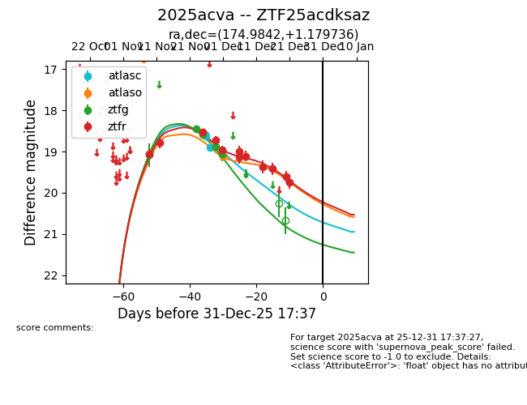
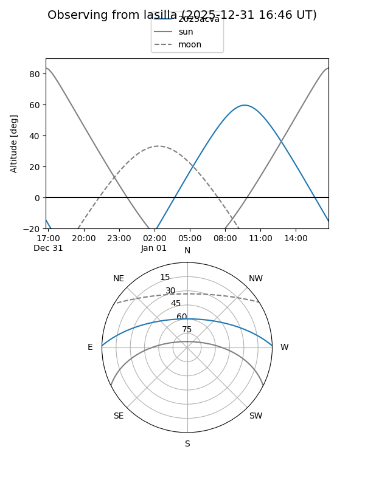
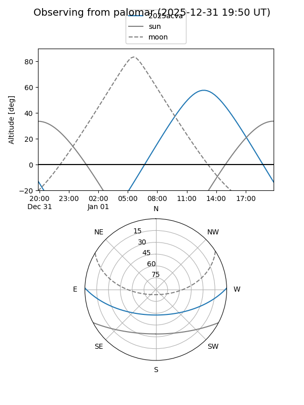
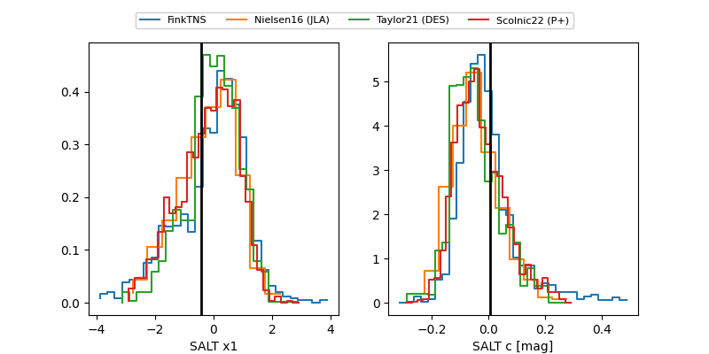

2025acva
Target 2025acva at 2025-12-22 16:31
Aliases and brokers:
FINK: fink-portal.org/ZTF25acdksaz
Lasair: lasair-ztf.lsst.ac.uk/objects/ZTF25acdksaz
ALeRCE: alerce.online/object/ZTF25acdksaz
TNS: wis-tns.org/object/2025acva
YSE: ziggy.ucolick.org/yse/transient_detail/2025acva
alt names
ZTF25acdksaz (ztf,fink_ztf)
2025acva (tns,yse)
Coordinates:
equatorial (ra, dec) = 174.9842,+1.17974
equatorial (HMS+DMS) = 11:39:56.21,+01:10:47.05
galactic (l, b) = (266.4867,+58.89635)
Flags:
Photometry:
last atlasc=18.90, atlaso=19.11, ztfg=19.07, ztfr=19.74
3 atlasc, 1 atlaso, 4 ztfg, 12 ztfr detections
Lightcurve

Visibility


Additional plots
